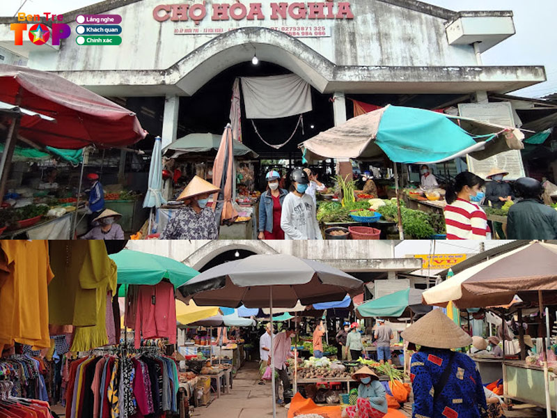
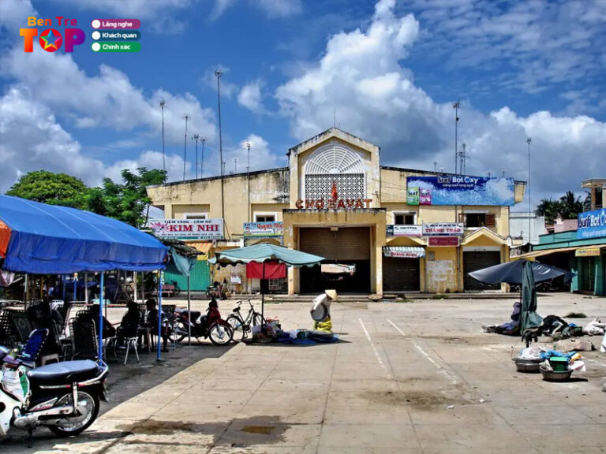

Chợ Bến Tre Sau Năm 2000
Chợ Bến Tre đã trải qua sự thay đổi mạnh mẽ từ năm 2000, trở thành một điểm giao thương hiện đại với các dịch vụ tiện ích, cơ sở hạ tầng được nâng cấp và phát triển mạnh mẽ.


Những Đặc Trưng Của Chợ Bến Tre Sau Năm 2000
- Chợ hiện đại với các khu vực chuyên biệt.
- Các dịch vụ tiện ích như wifi miễn phí, quầy giao dịch ngân hàng.
- Chợ có các khu vực để xe rộng rãi và khu ẩm thực đặc sản phong phú.